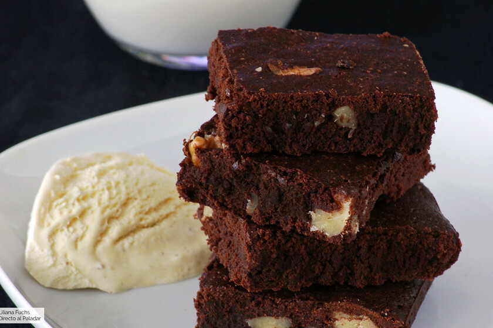
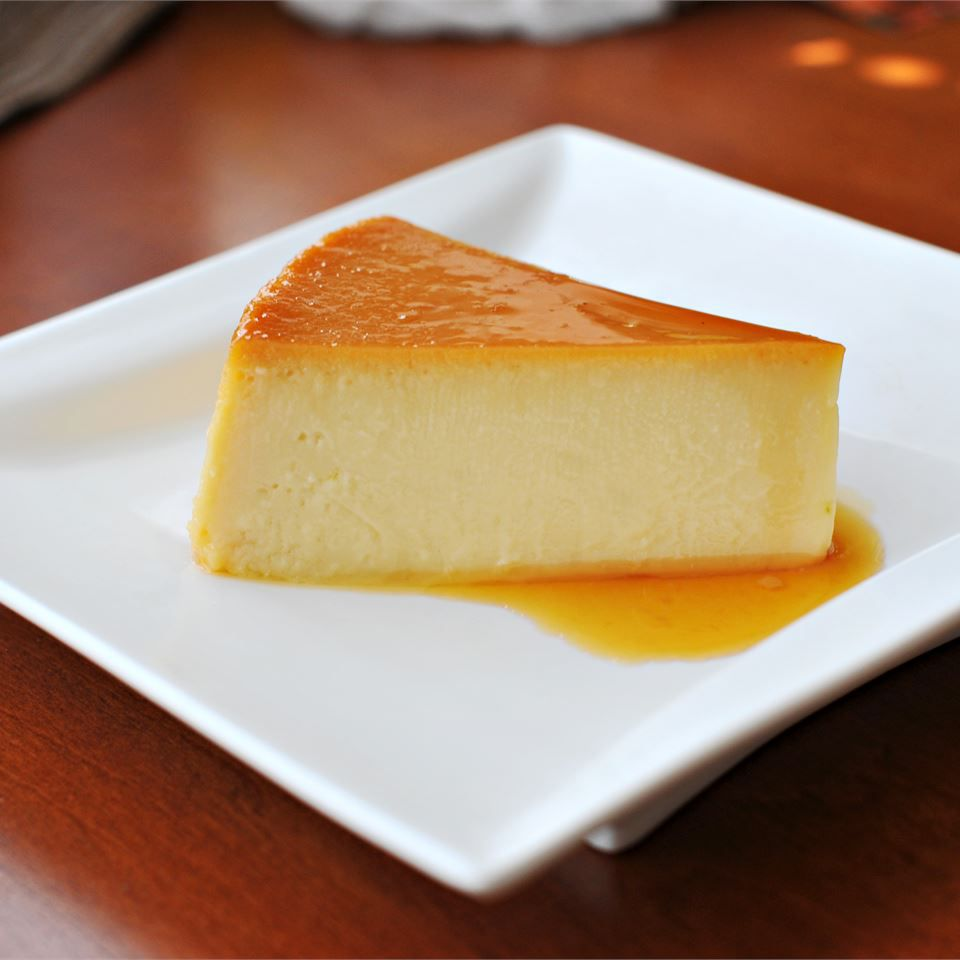
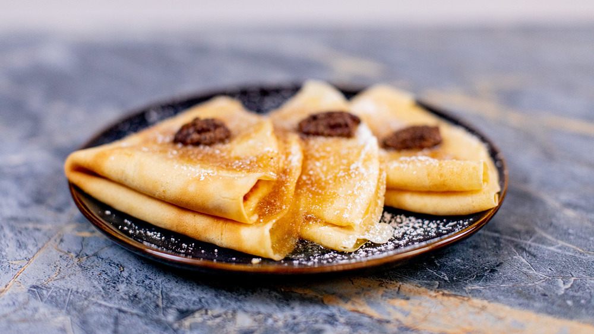
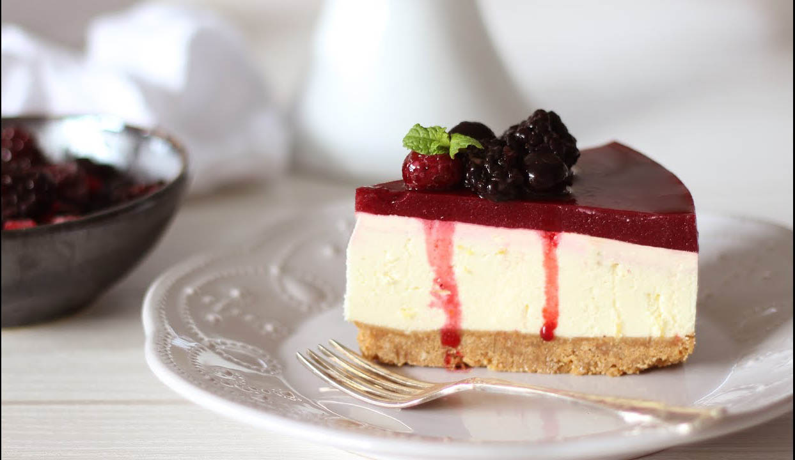

Tiramisú

$7800
Popular pastel frío de origen italiano, que se compone de capas de queso mascarpone, huevos, galletas o bizcochos savoidardi humedecidos en café y cacao en polvo.
Brownie
$8500
Deliciosa masa caliente apelmazada, con nueces y una gran cantidad de chocolate, que viene acompañado de una bola de vainilla.
Flan
$9000
Postre que proviene del batido de huevos con azúcar, leche y crema, trabajado en moldes y con una deliciosa cubierta de caramelo.
Crêpe
$8700
Popular pastel frío de origen italiano, que se compone de capas de queso mascarpone, huevos, galletas o bizcochos savoidardi humedecidos en café y cacao en polvo.
Cheesecake
$7500
Base de galleta, con una capa cremosa y una corona de frutas, acompañada de una rica cubierta con una salsa de arándanos
Categoria
Postres